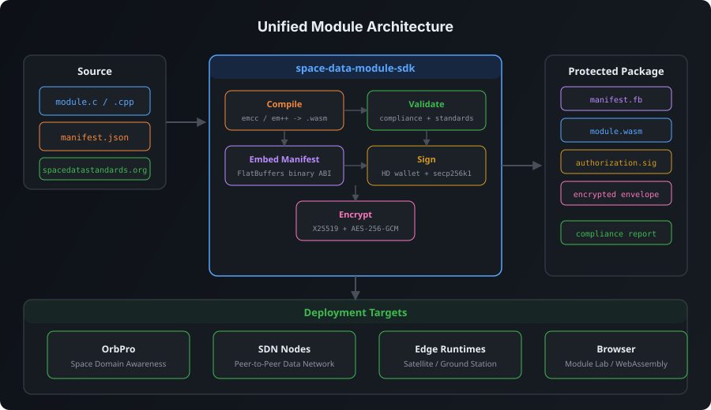

Author
Start from the examples and declare module methods, ports, runtime targets, and standards references in one manifest.
Space Data Network
Build portable WebAssembly modules with embedded FlatBuffer manifests, standards-aware validation, browser and WasmEdge harnesses, and signed delivery records for SDN hosts.

Start from the examples and declare module methods, ports, runtime targets, and standards references in one manifest.
Check manifests and wasm artifacts against the SDK contract, exported ABI symbols, and canonical SDS type names.
Append REC and MBL bundle metadata, attach publication records, and keep module artifacts single-file deployable.
Exercise the same module through browser, Node, process, and WasmEdge harnesses before publishing to SDN hosts.
Reference
SDN Stack